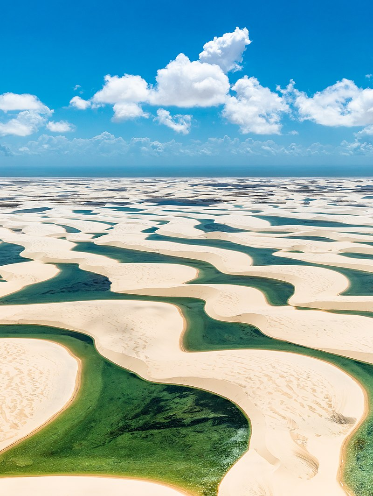
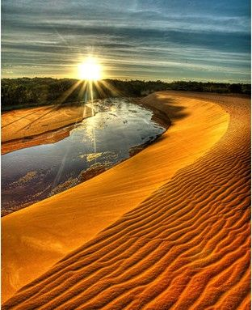
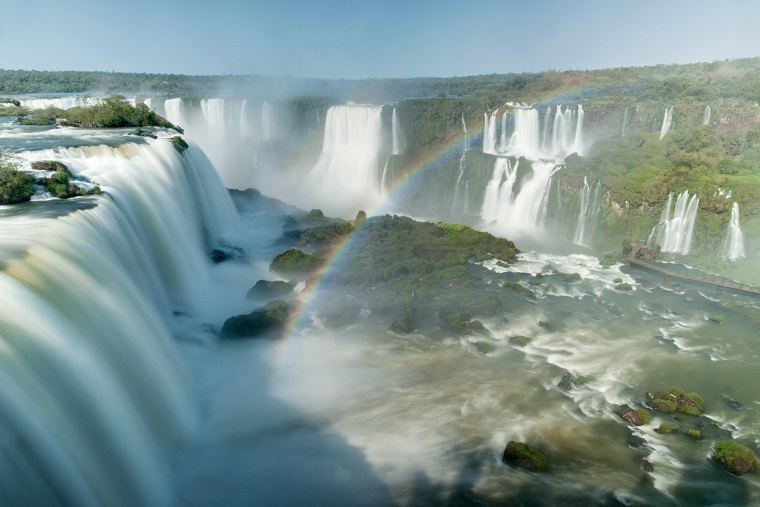
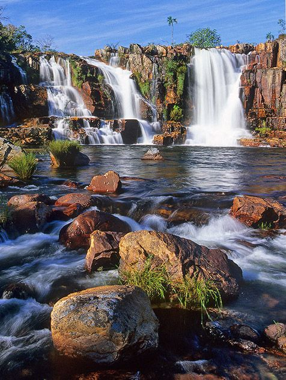

Tourist Spots
Just like the other page, only one tourist spot in each region will be mentioned due to the wide variety of tourist spots in the country.
Northeast Region
Lençóis Maranhenses: Inserted in the marine coastal biome, the park is an exponent of the mangrove, restinga and dune ecosystems, associating strong winds and regular rains. Its great scenic beauty, combined with walks through the dune fields and the possibility of bathing in the lakes, attract tourists from all over the world, who visit the park throughout the year.
North Region
Jalapan: In addition to the large aquatic web, there are already several tourist attractions and curiosities, such as the "fervedouros", which are water mines that gush water with enough force so that a person does not sink inside. Another very interesting tourist spot in the region are the Dunes, a much visited point and where many people come to admire the sunset.
South Region
Iguaçu Falls: are waterfalls on the Iguaçu River on the border of the Argentine province of Misiones and the Brazilian state of Paraná. Together they form the largest waterfall system in the world. The falls divide the river into upper and lower Iguaçu. The Iguaçu river rises near the heart of the city of Curitiba. For most of its course, the river crosses Brazil.
Midwest Region
Chapada dos Veadeiros: Among the park's main attractions are the two falls of the Preto river, the Preto river canyons, waterfalls on rocky walls at a narrowing of the river, and the Carioquinhas waterfalls, a formation of natural pools ideal for light baths and hydromassage.
Southeast Region

Christ the Redeemer: Symbol of Christianity, Christ the Redeemer has also become a cultural icon of Rio de Janeiro, Brazil and Latin America as a whole, being portrayed in cinema, television and songs. The monument is an important tourist spot, and is one of the seven wonders of the world.